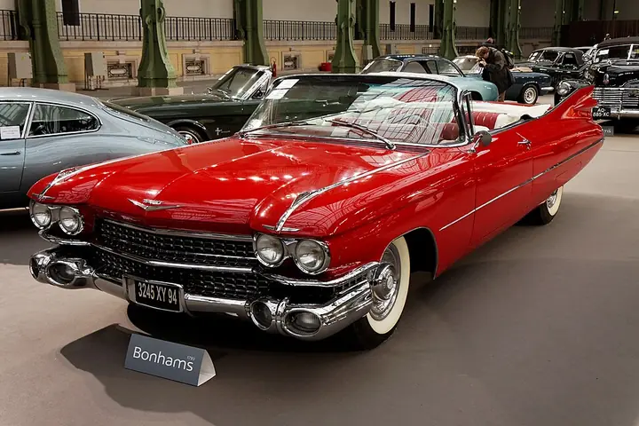
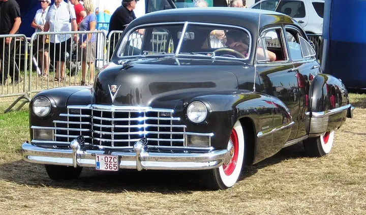
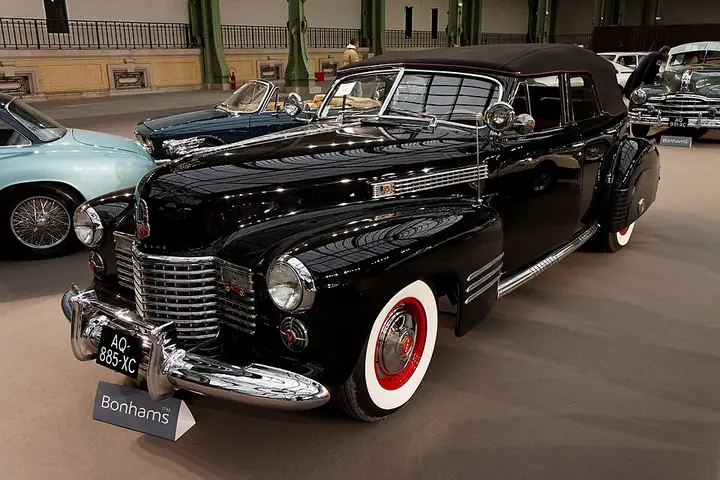

Cadillac Series 62
Seventh generation (1961–1964) · 1961–1964
Abstract
This generation of the Cadillac Series 62 was built 1961–1964. Body styles: 2-door hardtop, 4-door 6-window hardtop, 4-door 4-window hardtop, 4-door Town Sedan hardtop, 2-door convertible. Designed by Bill Mitchell.


1Specifications
| Model years | 1961–1964 |
|---|---|
| Designer | Bill Mitchell |
| Body style | 2-door hardtop4-door 6-window hardtop4-door 4-window hardtop4-door Town Sedan hardtop2-door convertible |
| Platform | C-body |
| Engine | 390 cu in OHV V8429 cu in OHV V8 |
| Transmission | 4-speed Hydra-Matic automatic3-speed TH-400, automatic |
| Wheelbase | 1961–64: 129.5 in |
| Length | 1961–62 (except Town Sedan): 222.0 in1962 Town Sedan: 215.0 in1963: 223.0 in1964: 223.5 in |
| Width | 1961: 79.8 in1962: 79.9 in1963: 79.7 in1964: 79.5 in |
| Height | 1961–62: 56.3 in1963–64: 56.6 in |
| Weight | 4700–4900 lb |
| Related | Cadillac EldoradoCadillac Sixty SpecialCadillac De VilleBuick ElectraOldsmobile 98 |
2Previous generations







3Generation by generation
Length +3% from the first to the last
1940–1941 19405,489 mm
1942 19425,588 mm
1948–1953 19485,436 mm
1954–1956 19545,497 mm
1957–1958 19575,484 mm
1959–1960 19595,715 mm
1961–1964 19615,639 mm
Weight +15% from the first to the last
1940–1941 19401,860 kg
1942 19421,950 kg
1948–1953 19481,996 kg
1954–1956 19542,041 kg
1957–1958 19572,177 kg
1959–1960 19592,223 kg
1961–1964 19612,132 kg